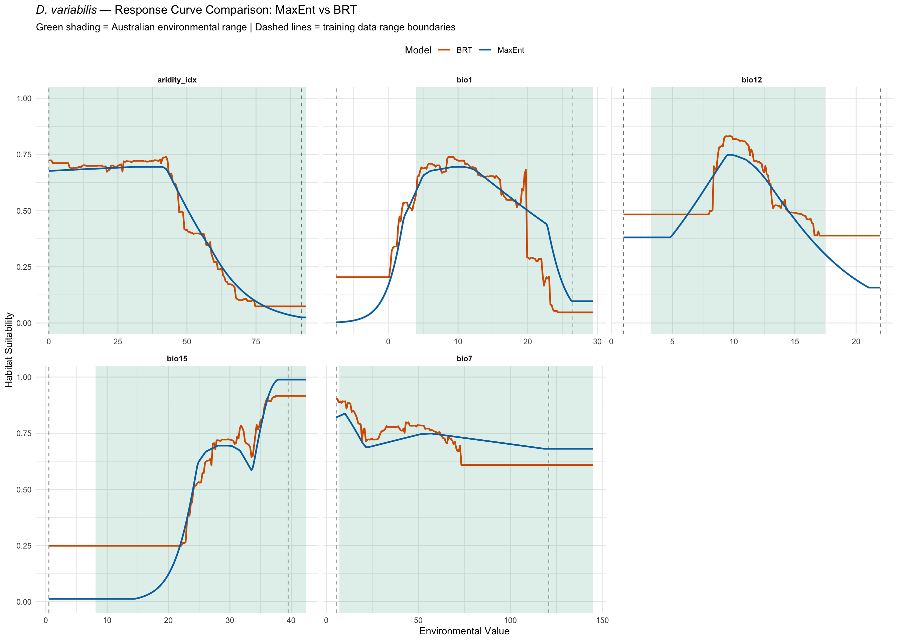

library(tidyverse)
library(terra)
library(dismo)
library(gbm)Step 6b: Response Curve Diagnosis — MaxEnt vs BRT
Dermacentor variabilis Species Distribution Model
Overview
This diagnostic script overlays MaxEnt and BRT response curves (marginal effects) on the same axes for each variable, with the Australian environmental range shaded. This reveals exactly where and why the two models diverge when projected to Australia.
Variables where the models produce different response shapes within the Australian climate range are the primary drivers of the 7x disagreement in predicted suitable area (MaxEnt 56.4% vs BRT 8.4%).
1. Load models and data
base_dir <- "~/Library/CloudStorage/OneDrive-CSIRO/OneDrive - Docs/01_Projects/SDM/Dvariabilis_SDM"
processed_dir <- file.path(base_dir, "processed_data")
figures_dir <- file.path(base_dir, "figures")
# Models
maxent_model <- readRDS(file.path(processed_dir, "selected_maxent_model.rds"))
brt_model <- readRDS(file.path(processed_dir, "brt_model.rds"))
# Environmental stacks
env_M <- rast(file.path(processed_dir, "env_selected_M.tif"))
env_aus <- rast(file.path(processed_dir, "env_selected_aus.tif"))
# Occurrence data (for computing means)
occ_env <- readRDS(file.path(processed_dir, "occurrences_with_env.rds"))
selected_vars <- readLines(file.path(processed_dir, "selected_variables.txt"))
sprintf("Variables: %s", paste(selected_vars, collapse = ", "))[1] "Variables: aridity_idx, bio1, bio12, bio15, bio7"2. Extract Australian variable ranges
# Get Australian environmental ranges for shading
aus_ranges <- list()
for (v in selected_vars) {
vals <- values(env_aus[[v]], na.rm = TRUE)
aus_ranges[[v]] <- c(
min = min(vals),
q10 = quantile(vals, 0.10),
q90 = quantile(vals, 0.90),
max = max(vals)
)
}
# Training data ranges
train_ranges <- list()
for (v in selected_vars) {
vals <- values(env_M[[v]], na.rm = TRUE)
train_ranges[[v]] <- c(min = min(vals), max = max(vals))
}
cat("Variable ranges — Training vs Australia:\n")
for (v in selected_vars) {
sprintf(" %s: Train [%.1f, %.1f] | Aus [%.1f, %.1f]",
v, train_ranges[[v]]["min"], train_ranges[[v]]["max"],
aus_ranges[[v]]["min"], aus_ranges[[v]]["max"])
}Variable ranges — Training vs Australia:3. Generate MaxEnt and BRT response curves
For each variable, predict suitability across its full range while holding all other variables at their mean values (from occurrence points). Overlay both models on the same axis.
# Compute mean environmental values at occurrence points
mean_vals <- as.data.frame(t(colMeans(
occ_env %>% dplyr::select(all_of(selected_vars)),
na.rm = TRUE
)))
# Generate response curves for both models
response_data <- list()
for (v in selected_vars) {
# Use the full range spanning both training and Australian environments
combined_min <- min(train_ranges[[v]]["min"], aus_ranges[[v]]["min"])
combined_max <- max(train_ranges[[v]]["max"], aus_ranges[[v]]["max"])
var_seq <- seq(combined_min, combined_max, length.out = 200)
# Create prediction data frame with other vars at mean
pred_df <- mean_vals[rep(1, 200), ]
pred_df[[v]] <- var_seq
# MaxEnt prediction (cloglog)
maxent_pred <- predict(maxent_model, pred_df, type = "cloglog")
# BRT prediction (response)
brt_pred <- predict(brt_model, as.data.frame(pred_df),
n.trees = brt_model$n.trees, type = "response")
response_data[[v]] <- tibble(
variable = v,
value = var_seq,
MaxEnt = maxent_pred,
BRT = brt_pred,
in_training = value >= train_ranges[[v]]["min"] & value <= train_ranges[[v]]["max"],
in_australia = value >= aus_ranges[[v]]["min"] & value <= aus_ranges[[v]]["max"]
)
}
response_all <- bind_rows(response_data) %>%
pivot_longer(cols = c(MaxEnt, BRT), names_to = "Model", values_to = "Suitability")
# Plot with Australian range shaded
p <- ggplot() +
# Shade Australian range
geom_rect(
data = tibble(
variable = selected_vars,
xmin = sapply(aus_ranges, `[`, "min"),
xmax = sapply(aus_ranges, `[`, "max")
),
aes(xmin = xmin, xmax = xmax, ymin = -Inf, ymax = Inf),
fill = "#009E73", alpha = 0.15
) +
# Mark training range boundaries
geom_vline(
data = tibble(
variable = selected_vars,
xmin = sapply(train_ranges, `[`, "min"),
xmax = sapply(train_ranges, `[`, "max")
) %>% pivot_longer(c(xmin, xmax), values_to = "x"),
aes(xintercept = x),
linetype = "dashed", colour = "grey50", linewidth = 0.4
) +
# Response curves
geom_line(data = response_all,
aes(x = value, y = Suitability, colour = Model),
linewidth = 0.9) +
facet_wrap(~variable, scales = "free_x", ncol = 3) +
scale_colour_manual(values = c("MaxEnt" = "#0072B2", "BRT" = "#D55E00")) +
labs(
title = expression(italic("D. variabilis") ~ "— Response Curve Comparison: MaxEnt vs BRT"),
subtitle = "Green shading = Australian environmental range | Dashed lines = training data range boundaries",
x = "Environmental Value",
y = "Habitat Suitability",
colour = "Model"
) +
theme_minimal(base_size = 11) +
theme(
strip.text = element_text(face = "bold"),
legend.position = "top"
) +
ylim(0, 1)
print(p)
ggsave(
file.path(figures_dir, "06b_response_curve_comparison.png"),
p, width = 14, height = 10, dpi = 300
)4. Quantify model divergence within Australian range
For each variable, calculate the mean absolute difference between MaxEnt and BRT predictions within the Australian environmental range.
divergence <- bind_rows(response_data) %>%
filter(in_australia) %>%
group_by(variable) %>%
summarise(
mean_abs_diff = mean(abs(MaxEnt - BRT)),
max_abs_diff = max(abs(MaxEnt - BRT)),
mean_maxent = mean(MaxEnt),
mean_brt = mean(BRT),
maxent_higher_pct = 100 * mean(MaxEnt > BRT),
aus_range_in_training_pct = 100 * mean(in_training),
.groups = "drop"
) %>%
arrange(desc(mean_abs_diff))
cat("Model divergence within Australian environmental range:\n")
print(divergence, n = Inf)
cat("\nVariables driving MaxEnt-BRT disagreement (ranked by mean absolute difference):\n")
for (i in seq_len(nrow(divergence))) {
row <- divergence[i, ]
dir <- ifelse(row$maxent_higher_pct > 50, "MaxEnt higher", "BRT higher")
sprintf(" %d. %s: MAD = %.3f, %s in %.0f%% of Aus range, %.0f%% within training range",
i, row$variable, row$mean_abs_diff, dir,
row$maxent_higher_pct, row$aus_range_in_training_pct)
}Model divergence within Australian environmental range:
# A tibble: 5 × 7
variable mean_abs_diff max_abs_diff mean_maxent mean_brt maxent_higher_pct
<chr> <dbl> <dbl> <dbl> <dbl> <dbl>
1 bio15 0.111 0.236 0.463 0.535 35.0
2 bio1 0.0700 0.287 0.495 0.455 54.7
3 bio7 0.0659 0.122 0.716 0.686 59.9
4 bio12 0.0625 0.147 0.540 0.572 23.0
5 aridity_idx 0.0266 0.113 0.445 0.449 35
# ℹ 1 more variable: aus_range_in_training_pct <dbl>
Variables driving MaxEnt-BRT disagreement (ranked by mean absolute difference):5. Extrapolation zone analysis
Identify which variables have Australian values that fall outside the training range.
cat("Extrapolation analysis — Australian values outside training range:\n\n")
extrap_summary <- tibble()
for (v in selected_vars) {
aus_vals <- values(env_aus[[v]], na.rm = TRUE)
tr_min <- train_ranges[[v]]["min"]
tr_max <- train_ranges[[v]]["max"]
below <- sum(aus_vals < tr_min)
above <- sum(aus_vals > tr_max)
total <- length(aus_vals)
extrap_summary <- bind_rows(extrap_summary, tibble(
variable = v,
pct_below = round(100 * below / total, 1),
pct_above = round(100 * above / total, 1),
pct_novel = round(100 * (below + above) / total, 1),
pct_analogous = round(100 * (total - below - above) / total, 1),
aus_min = round(min(aus_vals), 1),
aus_max = round(max(aus_vals), 1),
train_min = round(tr_min, 1),
train_max = round(tr_max, 1)
))
}
print(extrap_summary, n = Inf)Extrapolation analysis — Australian values outside training range:
# A tibble: 5 × 9
variable pct_below pct_above pct_novel pct_analogous aus_min aus_max train_min
<chr> <dbl> <dbl> <dbl> <dbl> <dbl> <dbl> <dbl>
1 aridity… 0 1.7 1.7 98.3 0 93 0
2 bio1 0 13.1 13.1 86.9 4 29.4 -7.5
3 bio12 0 0 0 100 3.3 17.5 1
4 bio15 0 9.1 9.1 90.9 8.1 42.4 0.5
5 bio7 0 3.5 3.5 96.5 7.2 145. 5.4
# ℹ 1 more variable: train_max <dbl>6. Summary
cat("======================================================\n")
cat(" RESPONSE CURVE DIAGNOSIS SUMMARY\n")
cat("======================================================\n\n")
cat("Key findings:\n")
cat("1. Variables with highest MaxEnt-BRT divergence within Australian range\n")
cat(" indicate which predictors drive the 7x area disagreement.\n\n")
cat("2. Variables where Australian values fall outside training range (extrapolation)\n")
cat(" cannot be reliably projected by either model.\n\n")
cat("3. Bio1 response curves likely show the largest divergence because:\n")
cat(" - MaxEnt assigns 66.4% contribution to Bio1 (dominant predictor)\n")
cat(" - BRT distributes importance more evenly (Bio1 = 29.9%)\n")
cat(" - Different response shapes under Australian Bio1 values → different projections\n\n")
cat("4. If divergence is concentrated in Bio1 and Bio7, removing these variables\n")
cat(" should substantially improve model agreement (see 05c_sensitivity_models.qmd).\n")
# Save divergence table
write_csv(divergence, file.path(processed_dir, "response_curve_divergence.csv"))
write_csv(extrap_summary, file.path(processed_dir, "extrapolation_summary.csv"))
sprintf("Saved response curve analysis outputs")======================================================
RESPONSE CURVE DIAGNOSIS SUMMARY
======================================================
Key findings:
1. Variables with highest MaxEnt-BRT divergence within Australian range
indicate which predictors drive the 7x area disagreement.
2. Variables where Australian values fall outside training range (extrapolation)
cannot be reliably projected by either model.
3. Bio1 response curves likely show the largest divergence because:
- MaxEnt assigns 66.4% contribution to Bio1 (dominant predictor)
- BRT distributes importance more evenly (Bio1 = 29.9%)
- Different response shapes under Australian Bio1 values → different projections
4. If divergence is concentrated in Bio1 and Bio7, removing these variables
should substantially improve model agreement (see 05c_sensitivity_models.qmd).
[1] "Saved response curve analysis outputs"